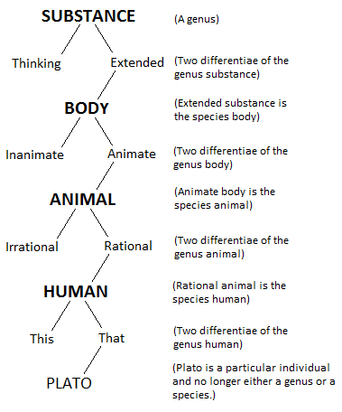

What is OOP?
The Basic Idea
The usual way that Object-Oriented Programming (OOP) is introduced to students is as a natural way to describe things in the world.
The story told goes something like this:
The world consists of a bunch of things.
These things may be animate or inanimate, but they have two things in common:
- Attributes: qualities, traits, features
- Behaviors: ways of interacting with other things
So, anything from an orange to the economy of France are things.
- The properties of an orange are its color, weight, species, etc.
- The properties of the economy of France are its GDP, its industrial sectors, its rate of unemployment, etc.
- The behaviors of an orange are things like being eaten, or rotting.
- The behaviors of an economy are going into a recession, etc.
These things are called objects.
All objects that exist are instances of abstract classes.
Every object that exists is an instance of an abstract class.
- A specific orange is an instance of the class of Oranges.
- France’s economy is an instance of the class of National Economies.
The nature of these classes raises an important philosophical question, but we will not address this here.
Classes are organized into trees.
Classes are organized into tree-like structures.
Specific classes inherit the attributes and behaviors of their parent and ancestors, although they can override these as well.
So, an organge might have this lineage:
Plant > Magnoliophyta > Magnoliopsida > Rosidae > Sapindales > Rutaceae > Citrus > Valencia Orange
The idea that the world is organized into a hierarchy of things descending from some primary substance is ancient. Here is an example from the European Middle Ages:

Relationship to Coding
OOP is based on the analogy that code can be organized in this way.
This is because software is often about the world – we write software to model things in the world.
- For example, if I wanted to write code simulate the traffic pattern of a city, I might start by creating a class called Car.
- This Car would have properties, such as its make and model, but also behaviors like driving.
- Then, in simulation program, I would create a bunch of Car instances and have them do things like drive on streets, etc.
Another Way to Look at It
Now, although this way of looking at OOP is somewhat intuitive, it can be misleading.
It is great for understanding the data structure that OOP uses.
- A tree-like organization of classes
- Classes with attributes and behaviors
But the OO pattern is not always used to model things in the world.
Sometimes is just a good way to organize code – OOP is a data structure for the data that is code.
In other words, just as we say that dimension can refer to the world or to the structure of data, so too can an object.
We use OOP to provide structure to our code, regardless of whether it paints an accurate picture of the world.
The Trinity
OOP theory states that classes exhibit three fundamental properties that make them powerful:
- Encapsulation
- Inheritance
- Polymorphism
Encapsulation means that objects are self-contained. They have their own scope, data, and logic. Ideally, they can be deployed in any context and be shielded from external states.
- Objects are meant to be black boxes to users: they should only be interacted with via the methods and attributes provided.
- Nothing else should influence the state of the object except what it contains and what is passed to it.
Inheritance means that classes can be subclasses of other classes and thereby inherit their ancestor attributes and methods. - Some programming languages allow only single inheritance – classes can have one parent. - Python supports multiple inheritance, but this can be complicated to use.
Polymorphism means that methods can perform different behaviors based on the arguments they are passed. - That is, a function can be defined more than once in a class, as long as it each has a unique signature. - A signature is the particular pattern of arguments (parameters) a method has.
Today, we are only going to focus on encapsulation …
- Once upon a time, there was a movement to implement only this concept.
- Microsoft, for example, developed a component-based approach to programming, where components are encapsulated unites of code without the complexity of inheritance.